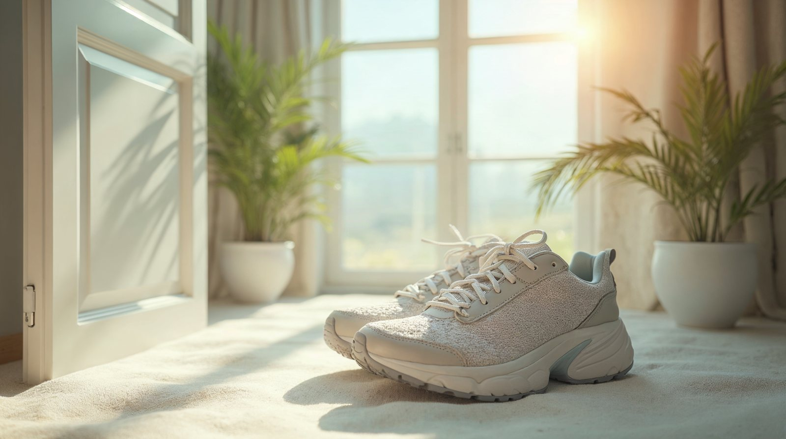
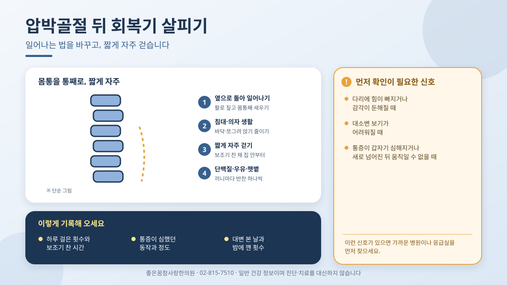

이종호 한의사 감수좋은꿈참사랑한의원 대표원장 (한의사 면허번호 19769)발행 2026-11-26 · 수정 2026-11-26
이 글의 차례
화장실 문턱에서 살짝 미끄러져 엉덩방아를 찧었을 뿐인데, 그날 밤부터 등 아래쪽이 찌르듯 아파 돌아눕기도 힘들어집니다. 며칠 참다가 정형외과에 갔더니 허리뼈 하나가 눌려 내려앉았다는 설명을 듣습니다. 골다공증이 있었다는 것도 그때 처음 알게 됩니다. 그렇게 크게 넘어진 것도 아닌데 뼈가 부러졌다니, 앞으로 또 그러면 어쩌나 하는 걱정이 앞섭니다.
골다공증성 압박골절은 뼈의 밀도가 낮아져 약해진 척추뼈가 위아래로 눌려 납작하게 주저앉은 상태를 말합니다. 건강한 뼈라면 버틸 만한 작은 충격, 예를 들어 엉덩방아, 무거운 화분 들기, 심한 기침이나 재채기에도 생길 수 있습니다. 등과 허리가 만나는 부위의 척추뼈에서 가장 많이 봅니다.
진료실에서 이 진단을 받고 오시는 분들은 대개 통증보다 두려움을 더 크게 이야기하십니다. "이제 조심해야 한다는데, 어디까지 움직여도 되는지 모르겠어요." 누워만 있자니 몸이 굳고, 움직이자니 또 다칠까 겁이 납니다. 그 마음이 충분히 이해됩니다.
압박골절의 치료 방향, 즉 보조기를 찰지, 시술을 할지, 어떤 골다공증 약을 쓸지는 정형외과와 내과의 몫입니다. 저는 그 치료를 바탕으로, 뼈가 붙어 가는 몇 달 동안 몸이 어떻게 버티고 있는지를 함께 살핍니다. 통증 때문에 굳은 근육, 줄어든 식사와 잠, 다시 걷는 일에 대한 두려움까지 함께 봅니다.
왜 뼈가 작은 충격에도 눌릴까요
뼈는 겉보기에는 단단한 돌 같지만, 안쪽은 촘촘한 그물처럼 얽힌 구조로 되어 있습니다. 우리 몸은 평생 낡은 뼈를 허물고 새 뼈를 채우는 일을 쉬지 않고 이어 갑니다. 나이가 들면서 허무는 속도가 채우는 속도를 앞지르면 그물이 성기어지고, 이를 골다공증이라고 부릅니다.
여성은 폐경 뒤 여성호르몬이 줄면서 뼈가 빠르게 약해지는 시기를 지나게 됩니다. 남성도 나이가 들면 조금씩 뼈가 약해지고, 오랫동안 스테로이드 약을 드셨거나, 몸무게가 많이 적거나, 활동량이 적거나, 술과 담배를 오래 하신 경우에도 위험이 커진다고 알려져 있습니다.
척추뼈의 앞쪽은 특히 그물 구조가 많은 부분이라, 뼈가 약해지면 앞쪽부터 눌려 쐐기 모양으로 내려앉는 경우가 많습니다. 그래서 압박골절이 생기면 등이 앞으로 조금 굽고, 키가 줄었다는 말을 듣기도 합니다.
한의학에서는 뼈를 신(腎)이 주관한다고 보고, 나이가 들며 그 기운이 줄어들면 뼈와 허리가 약해진다고 여겨 왔습니다. 그래서 저는 뼈만이 아니라 몸 전체의 기운, 식사와 소화, 잠과 체온을 함께 여쭙습니다. 뼈가 붙는 데에도 몸 전체의 회복력이 함께 필요하다고 보기 때문입니다.
이런 모양으로 불편이 나타납니다
골절이 생긴 직후에는 등이나 허리 한가운데가 찌르듯 아프고, 누웠다 일어나거나 돌아누울 때 통증이 가장 심합니다. 일단 일어나 서면 조금 덜하다가, 다시 눕거나 앉는 순간 아프다는 분이 많습니다.
통증이 옆구리나 배 쪽으로 띠처럼 퍼지기도 합니다. 눌린 뼈 근처를 지나는 신경이 자극을 받으면 이런 모양이 나타날 수 있습니다. 그래서 처음에는 배가 아픈 줄 알았다는 분도 계십니다.
몇 주가 지나 뼈가 자리를 잡아 가면 날카로운 통증은 차츰 줄고, 대신 등과 허리가 뻐근하고 무거운 느낌이 길게 남는 경우가 많습니다. 통증 때문에 오래 굳어 있던 근육이 피로를 호소하는 모습으로 보입니다. 등이 굽으면서 숨이 짧아지거나 배가 금방 부르다고 말씀하시는 분도 있습니다.
비슷해 보이지만 다르게 살펴야 하는 경우
허리를 삐끗한 뒤 아픈 급성 요추 염좌도 움직일 때 심하게 아프다는 점이 비슷합니다. 하지만 골다공증이 있거나, 나이가 많거나, 작은 충격 뒤에 등 한가운데의 뼈를 두드렸을 때 찌릿하게 아프다면 압박골절을 먼저 확인해야 합니다. 그래서 어르신이 넘어진 뒤 허리가 아프다고 하시면 사진부터 찍어 보시라고 권합니다.
다리로 저림이 내려오거나 다리 힘이 빠진다면 디스크나 협착증이 함께 있는지, 골절된 뼈가 신경 쪽을 누르고 있지는 않은지 정형외과에서 확인이 필요합니다.
뚜렷한 충격 없이 등 통증이 생겼다면, 골다공증 말고 뼈를 약하게 만든 다른 이유가 함께 있는지도 살펴봅니다. 갑상선이나 부갑상선, 드시는 약의 영향처럼 내과에서 함께 확인할 부분이 있어 결과지를 나란히 놓고 봅니다.
회복기, 몸이 버티는 방식을 함께 봅니다
압박골절은 대개 몇 주에서 몇 달에 걸쳐 뼈가 자리를 잡아 갑니다. 이 시기에 가장 흔하게 생기는 문제는 오히려 움직임이 너무 줄어드는 것입니다. 아파서 누워 지내는 시간이 길어지면 다리와 허리 근육이 빠르게 줄고, 소화와 대변, 잠까지 함께 흔들립니다.
허리를 받치는 근육이 약해지면 뼈가 받는 부담이 다시 커집니다. 그래서 정형외과에서 허락한 범위 안에서는 조금씩이라도 일어나 걷는 것이 회복에 중요하다고 안내받으시는 경우가 많습니다. 보조기를 찬 상태로 짧게 걷기부터 시작하는 것이 흔한 순서입니다.
등이 앞으로 굽는 자세도 함께 봅니다. 통증을 피하려고 몸을 웅크리다 보면 등 근육은 늘 당겨진 채로 지치고, 가슴은 좁아집니다. 벽에 등을 기대고 서서 뒤통수와 등, 엉덩이를 가볍게 붙여 보는 정도의 연습이 편하다는 분이 많습니다. 다만 허리를 세게 젖히는 동작은 피하셔야 합니다.
식사도 중요한 몫을 합니다. 아프면 입맛이 떨어지고 끼니가 부실해지기 쉬운데, 뼈가 붙고 근육을 지키려면 단백질과 칼슘, 비타민 D가 꾸준히 필요합니다. 생선, 달걀, 두부, 우유나 요구르트를 하루 끼니 속에 조금씩 나눠 드시도록 권합니다.
먼저 이렇게 여쭙니다
결과지와 약 봉투를 함께 펼쳐 놓고, 저는 대략 이런 순서로 여쭙니다.
- 언제, 어떤 일로 골절이 생겼나요? 몇 번째 허리뼈인지 들으셨나요?
- 보조기를 차고 계신가요? 시술을 받으셨다면 언제였나요?
- 골다공증 약은 어떤 것을 언제부터 드시거나 맞고 계신가요?
- 누웠다 일어날 때, 앉아 있을 때, 걸을 때 가운데 언제가 가장 불편한가요?
- 하루에 몇 번, 얼마나 걸으시나요? 집 안에서 넘어질 뻔한 일이 있었나요?
- 식사량과 대변, 잠은 다치기 전과 비교해 어떠신가요?
보호자와 함께 오시면 집에서의 하루를 더 자세히 들을 수 있어 도움이 됩니다.
일상에서 먼저 해 볼 수 있는 것
회복기의 생활은 '뼈에 무리를 주지 않으면서, 몸은 계속 움직이게 하는 것'으로 정리할 수 있습니다. 정형외과 안내를 먼저 따르시고, 그 위에서 아래 습관을 조금씩 들여 보세요.
- 누웠다 일어날 때는 옆으로 돌아누운 뒤 팔로 바닥을 짚고 몸통을 통째로 세우기
- 바닥에 앉거나 쪼그려 앉는 생활보다 침대와 의자 생활로 바꾸기
- 허리를 숙여 물건을 들거나 몸을 비트는 동작은 당분간 피하고, 자주 쓰는 물건은 허리 높이에 두기
- 보조기를 찬 상태로 집 안에서 짧게 자주 걷고, 익숙해지면 조금씩 거리 늘리기
- 끼니마다 단백질 반찬 하나, 하루 한 번 우유나 요구르트, 낮에 잠깐 햇볕 쬐기
- 기침과 변비가 허리에 힘을 주게 만드니, 물을 자주 마시고 대변 상태를 살피기
넘어지지 않는 것이 다음 골절을 막는 가장 가까운 길입니다. 욕실 바닥에 미끄럼 방지 매트를 깔고, 밤에 화장실 가는 길에 작은 등을 켜 두고, 문턱과 전선을 정리해 보세요. 실내화는 뒤꿈치를 감싸는 것으로 고르시길 권합니다.
골다공증 약은 뼈가 다시 약해지는 것을 막기 위해 오래 이어 가는 경우가 많습니다. 드시는 방법이 까다로운 약도 있으니 처방받은 대로 드시고, 줄이거나 멈추는 일은 처방한 의사와 상의해서 정하시길 권합니다.
가족이 함께 살펴 주시면 좋은 것
압박골절은 어르신 혼자 감당하기에 버거운 시기를 만듭니다. 장을 보거나 무거운 빨래를 옮기는 일, 높은 찬장의 물건을 꺼내는 일처럼 평소 아무렇지 않던 일이 갑자기 위험한 일이 됩니다. 가족이 이런 일을 잠시 나눠 맡아 주시면 허리가 쉴 틈이 생깁니다.
다만 모든 일을 대신해 드리는 것은 오히려 회복을 늦출 수 있습니다. 혼자 할 수 있는 일, 예를 들어 집 안을 걷거나 의자에서 일어나 물을 따르는 일은 스스로 하시도록 곁에서 지켜봐 주시는 편이 좋습니다. 움직일 기회를 남겨 두는 것도 돌봄의 한 모양입니다.
어르신들은 아프다는 말을 잘 하지 않으십니다. 식사량이 줄었는지, 화장실에 가는 횟수가 줄었는지, 낮에 누워 있는 시간이 늘었는지를 가족이 살펴 알려 주시면 진료실에서 놓치기 쉬운 부분을 함께 볼 수 있습니다.
한의원에서 함께 살필 수 있는 경우
- 정형외과 치료를 받고 있지만 등과 허리 근육의 뻐근함과 피로가 길게 남는 경우
- 통증 때문에 움직임이 줄면서 식사, 대변, 잠이 함께 흔들린 경우
- 보조기를 오래 차면서 어깨와 엉덩이, 다리 근육이 굳고 무거워진 경우
- 다시 넘어질까 두려워 걷기와 외출을 줄이게 된 경우
좋은꿈참사랑한의원에 처음 오시면 먼저 아래 '먼저 확인이 필요한' 신호가 없는지부터 봅니다. 그다음 맥을 짚고, 골절 부위는 피해서 등과 허리, 엉덩이 주변 근육 상태를 조심스럽게 확인합니다. 필요하면 초음파로 통증이 있는 근육 주변을 살펴보기도 합니다.
그 뒤 진찰한 내용과 정형외과 치료 계획을 바탕으로 침, 온열 장비를 이용한 관리, 한약 상담 가운데 지금 상태에 맞는 것을 정합니다. 골절 부위에 직접 힘이 가는 추나나 강한 자극은 하지 않고, 주변 근육의 긴장과 몸 전체의 회복을 살피는 쪽으로 범위를 정합니다. 한약을 상의할 때는 골다공증 약과 다른 약을 모두 확인하고 신중하게 정합니다.
정형외과와 내과 진료는 그대로 이어 가시는 것을 기본으로 합니다.
다시 오시면 지난번 정한 것 하나가 실제로 어땠는지부터 이어서 듣습니다. 집 안 걷기를 늘려 보기로 했다면 하루 몇 번 걸으셨는지, 식사에 단백질 반찬을 더하기로 했다면 며칠이나 챙기셨는지를 여쭙습니다.
이렇게 기록해 오시면 상담이 쉬워집니다
회복기의 몸은 하루하루 조금씩 달라집니다. 2주 정도만 짧게 적어 보세요. 보호자께서 함께 적어 주셔도 좋습니다.
- 골절 부위와 시기가 적힌 결과지, 골밀도 검사 결과
- 드시는 골다공증 약과 진통제, 다른 약의 이름
- 하루에 걸은 횟수와 시간, 보조기를 찬 시간
- 통증이 심했던 동작과 그때의 정도(0~10)
- 끼니마다 드신 양, 대변을 본 날, 밤에 깬 횟수
빠진 날이 있어도 괜찮습니다. 걷기가 조금 늘었던 날, 통증이 유난히 컸던 날부터 함께 들여다보겠습니다.

다시 일어서 걷는 날까지
압박골절은 '뼈가 약하다'는 사실을 한꺼번에 알려 주는 일이라 마음이 크게 흔들립니다. 하지만 많은 분들이 뼈가 자리를 잡은 뒤 다시 장을 보고, 산책을 하고, 손주를 만나러 다니십니다. 그 사이의 몇 달을 어떻게 보내느냐가 그 뒤의 걸음을 많이 좌우합니다.
회복이 더디게 느껴지는 날도 있습니다. 어제는 조금 걸었는데 오늘은 다시 아프고, 한 주 내내 제자리인 것 같기도 합니다. 그래도 몇 주를 묶어 놓고 보면 일어나는 동작이 조금 수월해지고, 걷는 거리가 조금 늘어 있는 경우가 많습니다. 그래서 기록을 권해 드립니다.
이번 주에는 하나만 골라 보세요. 돌아누워 일어나는 연습, 하루 세 번 집 안 걷기, 끼니마다 단백질 반찬 하나. 다음에 오시면 그 하나가 몸에 어떻게 닿았는지부터 여쭙겠습니다.
이런 증상은 먼저 확인이 필요합니다
- 다리에 힘이 빠지거나 감각이 둔해지고, 대소변 보기가 어려워진 경우
- 통증이 갑자기 크게 심해지거나, 새로 넘어진 뒤 다른 부위까지 아파 움직일 수 없는 경우
이런 신호가 있으면 한의원보다 가까운 병원이나 응급실을 먼저 찾으세요.
함께 읽으면 좋은 글
- 허리를 삐끗해 움직이기 힘든 급성 요추 염좌는 첫 며칠 어떻게 살피나요?
- 70대 어르신 집의 욕실과 현관은 낙상을 줄이려면 어떻게 점검하나요?
- 80대 어르신이 의자에서 일어서기 어려워질 때 가족은 무엇을 살펴보나요?
- 혼자 한의원에 오시는 어르신은 접수와 진료 때 무엇을 준비하면 되나요?
- 한의원 가기 전에 복용 약 목록은 어떻게 정리하면 좋나요?

여쭙는 것
- 언제, 어떤 일로 골절이 생겼나요? 몇 번째 허리뼈인지 들으셨나요?
- 보조기를 차고 계신가요? 시술을 받으셨다면 언제였나요?
- 골다공증 약은 어떤 것을 언제부터 드시거나 맞고 계신가요?
생활에서 해 볼 것
- 누웠다 일어날 때는 옆으로 돌아누운 뒤 팔로 바닥을 짚고 몸통을 통째로 세우기
- 바닥에 앉거나 쪼그려 앉는 생활보다 침대와 의자 생활로 바꾸기
- 허리를 숙여 물건을 들거나 몸을 비트는 동작은 당분간 피하고, 자주 쓰는 물건은 허…
한의원에서 함께 살필 것
- 정형외과 치료를 받고 있지만 등과 허리 근육의 뻐근함과 피로가 길게 남는 경우
- 통증 때문에 움직임이 줄면서 식사, 대변, 잠이 함께 흔들린 경우
- 보조기를 오래 차면서 어깨와 엉덩이, 다리 근육이 굳고 무거워진 경우
먼저 확인이 필요한 신호
- 다리에 힘이 빠지거나 감각이 둔해지고, 대소변 보기가 어려워진 경우
- 통증이 갑자기 크게 심해지거나, 새로 넘어진 뒤 다른 부위까지 아파 움직일 수 없는…
한눈에 보는 표
| 구분 | 핵심 |
|---|---|
| 여쭙는 것 | 언제, 어떤 일로 골절이 생겼나요? 몇 번째 허리뼈인지 들으셨나요? 보조기를 차고 계신가요? 시술을 받으셨다면 언제였나요? |
| 생활에서 해 볼 것 | 누웠다 일어날 때는 옆으로 돌아누운 뒤 팔로 바닥을 짚고 몸통을 통째로 세우기 바닥에 앉거나 쪼그려 앉는 생활보다 침대와 의자 생활로 바꾸기 |
| 한의원에서 함께 살필 것 | 정형외과 치료를 받고 있지만 등과 허리 근육의 뻐근함과 피로가 길게 남는 경우 통증 때문에 움직임이 줄면서 식사, 대변, 잠이 함께 흔들린 경우 |
| 먼저 확인이 필요한 신호 | 다리에 힘이 빠지거나 감각이 둔해지고, 대소변 보기가 어려워진 경우 통증이 갑자기 크게 심해지거나, 새로 넘어진 뒤 다른 부위까지 아파 움직일 수 없는 경우 |
자주 묻는 질문
압박골절이 생기면 계속 누워 있어야 하나요?
처음 며칠은 통증이 커서 누워 지내는 시간이 길 수 있지만, 정형외과에서 허락한 범위 안에서는 보조기를 차고 조금씩 걷는 것을 권하는 경우가 많습니다. 오래 누워 있으면 근육이 빠르게 줄어 회복이 더뎌질 수 있습니다.
압박골절이 있는데 침을 맞아도 되나요?
골절 부위에 직접 강한 자극을 주지 않고, 주변 근육의 긴장과 몸 전체 상태를 살피는 쪽으로 정합니다. 정형외과 치료 내용과 드시는 약을 알려 주시면 그에 맞춰 범위를 정합니다.
골다공증 약과 한약을 같이 먹어도 되나요?
드시는 골다공증 약과 다른 약을 모두 확인한 뒤 신중하게 상의합니다. 골다공증 약은 처방한 의사와 상의 없이 멈추지 않으시길 권합니다.
줄어든 키와 굽은 등은 다시 펴지나요?
눌린 뼈의 모양이 되돌아가는 것은 어렵지만, 등과 허리 근육을 다시 세우고 자세를 익히면 등이 덜 굽고 숨쉬기와 걷기가 편해지는 분이 많습니다. 운동의 종류와 시기는 정형외과 안내를 먼저 따르세요.
다시 골절이 생기지 않으려면 무엇이 가장 중요한가요?
골다공증 치료를 꾸준히 이어 가는 것, 넘어지지 않도록 집 안 환경을 정리하는 것, 다리와 허리 근육을 지키는 것이 함께 필요합니다. 이 세 가지를 진료 때마다 하나씩 점검해 드립니다.
좋은꿈참사랑한의원은 재진 때 지난번 이야기부터 이어서 여쭙니다. 진료시간과 예약은 오시는 길에서 확인하세요.
어디서 상담받을 수 있나요?
좋은꿈참사랑한의원은 서울 동작구 만양로2길 2 신성빌딩 3층·5층(서울 동작구 상도동, 7호선 상도역 3번 출구 근처)에 있습니다. 한의사 3명(이종호 대표원장, 조영기 수석진료원장, 정원영 진료원장)이 진료합니다. 진료시간은 평일 09:30~20:00(점심 13:00~14:00), 토·일·공휴일 09:30~15:00이며, 방문 전 전화로 확인을 권합니다. 예약은 네이버 예약, 카카오톡 상담, 전화 02-815-7510로 받습니다.
이 글은 일반적인 건강 정보이며 개인의 진단이나 치료를 대신하지 않습니다. 증상이 있거나 복용 중인 약이 있다면 진료를 통해 확인하세요. 치료 효과는 개인마다 다를 수 있습니다.
작성 기준: 일반적으로 알려져 있는 건강 정보를 참고해 정리했습니다(대표원장 감수). 증상 기록은 1~2주 동안 하루 1회, 비슷한 시간에 적어 오시면 지난 상태와 비교하기 쉽습니다.